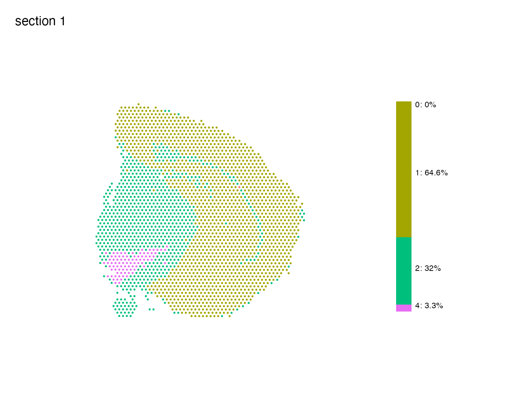
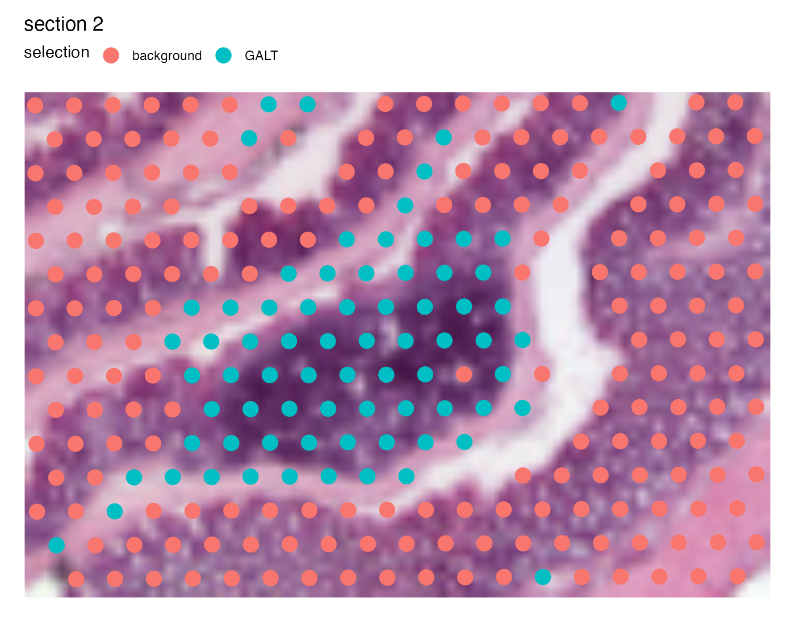

Visualization of categorical features
Last compiled: 11 April 2023
categorical_features.RmdIn this tutorial, we’ll look at basic usage of the
MapLabels() function for plotting features that represent
discrete groups of spots. This could for example be manually selected
spots or clusters. Such features as stored in the meta.data
slot of our Seurat object and can be represented as either
‘character’ vectors of ‘factors’.
Load data
First we need to load some 10x Visium data. Here we’ll use a mouse
brain tissue dataset and a mouse colon dataset that are shipped with
semla.
# Load data
se_mbrain <- readRDS(file = system.file("extdata",
"mousebrain/se_mbrain",
package = "semla"))
se_mbrain$sample_id <- "mousebrain"
se_mcolon <- readRDS(file = system.file("extdata",
"mousecolon/se_mcolon",
package = "semla"))
se_mcolon$sample_id <- "mousecolon"
se <- MergeSTData(se_mbrain, se_mcolon)Map categorical features
For categorical data, we use MapLabels() instead of
MapFeatures(). This function allows us to color our spots
based on some column of our Seurat object containing categorical
data.
# Here we use the & operator from the patchwork R package to add a theme
# You can find more details in the 'advanced' tutorial
MapLabels(se, column_name = "sample_id", ncol = 1) &
theme(legend.position = "right")Let’s run unsupervised clustering on our data to get slightly more interesting results to work with.
NB: It doesn’t make much sense to run data-driven clustering on two
completely different tissue types, but here we are only interested in
demonstrating how you can use MapLabels.
se <- se |>
NormalizeData() |>
ScaleData() |>
FindVariableFeatures() |>
RunPCA() |>
FindNeighbors(reduction = "pca", dims = 1:10) |>
FindClusters(resolution = 0.2)## Modularity Optimizer version 1.3.0 by Ludo Waltman and Nees Jan van Eck
##
## Number of nodes: 5164
## Number of edges: 170850
##
## Running Louvain algorithm...
## Maximum modularity in 10 random starts: 0.9210
## Number of communities: 5
## Elapsed time: 0 secondsMap clusters
We can also use the function MapLabelsSummary() if want
to add a stacked bar plot next to the spatial plot, summarizing the
percentage of spots for each cluster in the section. If you would rather
view the actual spot count you can pass
bar_display = "count" instead.
MapLabelsSummary(se,
column_name = "seurat_clusters",
ncol = 1,
section_number = 1) &
theme(legend.position = "none")
Overlay maps on images
And just as with MapFeatures, we can add our H&E
images to the plots. Before we do this, we just need to load the H&E
images into our Seurat object first with
LoadImages.
se <- LoadImages(se, verbose = FALSE)
MapLabels(se,
column_name = "seurat_clusters",
image_use = "raw",
override_plot_dims = TRUE) +
plot_layout(guides = "collect") &
guides(fill = guide_legend(override.aes = list(size = 3),
ncol = 2)) &
theme(legend.position = "right")Crop image
We can crop the images manually by defining a crop_area.
The crop_area should be a vector of length four defining
the corners of a rectangle, where the x- and y-axes are defined from
0-1.
In order to decide how this rectangle should be defined, you can get some help by adding a grid to the plot:
p <- MapLabels(se,
column_name = "seurat_clusters",
image_use = "raw",
pt_alpha = 0.5) &
theme(panel.grid.major = element_line(linetype = "dashed"), axis.text = element_text())
pNow if we want to crop out the GALT tissue in the mouse colon sample we can cut the image at left=0.45, bottom=0.55, right=0.65, top=0.7:
p <- MapLabels(se,
column_name = "selection",
image_use = "raw",
pt_size = 5,
section_number = 2,
crop_area = c(0.45, 0.55, 0.65, 0.7))
p
And we can patch together a nice figure showing the whole tissue and the zoom in of the GALT:
# override_plot_dims=TRUE can be used to crop the image to only
# include the region that contain spots (see 'advanced' tutorial)
p_global <- MapLabels(se,
column_name = "selection",
image_use = "raw",
pt_size = 1,
section_number = 2,
override_plot_dims = TRUE) &
guides(fill = guide_legend(override.aes = list(size = 3)))
p_GALT <- MapLabels(se,
column_name = "selection",
image_use = "raw",
pt_size = 5,
section_number = 2,
crop_area = c(0.45, 0.55, 0.65, 0.7)) &
theme(plot.title = element_blank(),
plot.subtitle = element_blank(),
legend.position = "none")
(p_global / p_GALT)Package version
-
semla: 1.0.0
Session info
## R version 4.2.1 (2022-06-23)
## Platform: x86_64-apple-darwin13.4.0 (64-bit)
## Running under: macOS Big Sur ... 10.16
##
## Matrix products: default
## BLAS/LAPACK: /Users/ludviglarsson/miniconda3/envs/R4.2/lib/libopenblasp-r0.3.21.dylib
##
## locale:
## [1] en_US.UTF-8/en_US.UTF-8/en_US.UTF-8/C/en_US.UTF-8/en_US.UTF-8
##
## attached base packages:
## [1] stats graphics grDevices utils datasets methods base
##
## other attached packages:
## [1] patchwork_1.1.2 tibble_3.1.8 semla_1.0.0 ggplot2_3.4.1
## [5] dplyr_1.1.0 SeuratObject_4.1.3 Seurat_4.3.0
##
## loaded via a namespace (and not attached):
## [1] Rtsne_0.16 colorspace_2.0-3 deldir_1.0-6
## [4] ellipsis_0.3.2 ggridges_0.5.3 rprojroot_2.0.3
## [7] fs_1.5.2 spatstat.data_3.0-0 rstudioapi_0.14
## [10] farver_2.1.1 leiden_0.4.2 listenv_0.8.0
## [13] ggrepel_0.9.3 fansi_1.0.3 codetools_0.2-18
## [16] splines_4.2.1 cachem_1.0.6 knitr_1.39
## [19] zeallot_0.1.0 polyclip_1.10-0 jsonlite_1.8.3
## [22] ica_1.0-3 cluster_2.1.4 png_0.1-7
## [25] uwot_0.1.14 spatstat.sparse_3.0-0 shiny_1.7.4
## [28] sctransform_0.3.5 compiler_4.2.1 httr_1.4.4
## [31] Matrix_1.5-3 fastmap_1.1.0 lazyeval_0.2.2
## [34] cli_3.4.1 later_1.3.0 htmltools_0.5.4
## [37] tools_4.2.1 igraph_1.3.4 gtable_0.3.0
## [40] glue_1.6.2 RANN_2.6.1 reshape2_1.4.4
## [43] Rcpp_1.0.9 scattermore_0.8 jquerylib_0.1.4
## [46] pkgdown_2.0.6 vctrs_0.5.2 nlme_3.1-159
## [49] spatstat.explore_3.0-5 progressr_0.10.1 lmtest_0.9-40
## [52] spatstat.random_3.0-1 xfun_0.32 stringr_1.5.0
## [55] globals_0.16.0 mime_0.12 miniUI_0.1.1.1
## [58] lifecycle_1.0.3 irlba_2.3.5 goftest_1.2-3
## [61] future_1.27.0 MASS_7.3-58.1 zoo_1.8-10
## [64] scales_1.2.1 ragg_1.2.2 promises_1.2.0.1
## [67] spatstat.utils_3.0-1 parallel_4.2.1 RColorBrewer_1.1-3
## [70] yaml_2.3.5 memoise_2.0.1 reticulate_1.26
## [73] pbapply_1.5-0 gridExtra_2.3 sass_0.4.2
## [76] stringi_1.7.8 highr_0.9 desc_1.4.1
## [79] rlang_1.0.6 pkgconfig_2.0.3 systemfonts_1.0.4
## [82] matrixStats_0.62.0 evaluate_0.16 lattice_0.20-45
## [85] tensor_1.5 ROCR_1.0-11 purrr_1.0.1
## [88] labeling_0.4.2 htmlwidgets_1.5.4 cowplot_1.1.1
## [91] tidyselect_1.2.0 parallelly_1.32.1 RcppAnnoy_0.0.19
## [94] plyr_1.8.7 magrittr_2.0.3 R6_2.5.1
## [97] magick_2.7.3 generics_0.1.3 withr_2.5.0
## [100] pillar_1.8.1 fitdistrplus_1.1-8 abind_1.4-5
## [103] survival_3.4-0 sp_1.5-1 future.apply_1.9.0
## [106] KernSmooth_2.23-20 utf8_1.2.2 spatstat.geom_3.0-3
## [109] plotly_4.10.0 rmarkdown_2.15 grid_4.2.1
## [112] data.table_1.14.2 forcats_0.5.2 digest_0.6.29
## [115] xtable_1.8-4 dbscan_1.1-10 tidyr_1.3.0
## [118] httpuv_1.6.5 textshaping_0.3.6 munsell_0.5.0
## [121] viridisLite_0.4.1 bslib_0.4.0 shinyjs_2.1.0